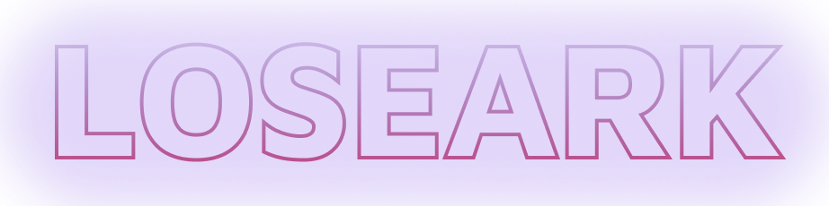

새소식
공지사항
이벤트
게임정보
세계관
클래스
컨텐츠
커뮤니티
자유
Q&A
마이페이지
내정보
회원정보수정
Search
여명의 시대
세계의 탄생
태초의 세상은 혼돈으로 가득차 있었다
일곱 신과 종족의 탄생
아크라시아가 태동한 초기,
최고신 루페온과 일곱신들은 별에서 살아갈 여러 종족들을 만들어내었다
최초의 전쟁, 그리고 가디언의 탄생
대륙에서 일어난 전쟁으로 아크의 힘이 증폭되면서
그 동안 공명해오던 두 서계의 힘이 어그려졌고, 차원에 거대한 균열이 발생했다
어둠의 왕좌
이그하람의 죽음
질서와 혼돈이 만들어낸 차원간의 거대한 전쟁이후, 더이상의 균열은 발생하지 않았다
붉은 달
이그하람의 소멸 이후,
카제로스는 태초부터 존재한 자들과 함께 혼돈의 세계를 지배했다.
군단장의 탄생
카제로스는 혼돈에서 태어난 새로운 종족들을 오랜 시간 동안 관찰했다.
어둠의 검사 카멘
한편, 페트라니아 깊숙한 곳에서 나타나 홀로 대륙의 절반을 평정했던 어둠의 검사가 있었다.
사슬전쟁
대주교의 국가, 세이크리아의 타락
신이 사라진 아크라시아 대륙에는 신들이 만들어낸 종족들이 고유의 문화를 만들며 살아가고 있었다.
포튼쿨 전쟁
아크를 지키고 있던 실린들이 살해당하고
거인 도메메크의 죽음마저 세이크리아의 소행이었다는 사실을 알게 된 아제나는 분노했다.
깨어난 가디언
아크라시아에서 벌어진 전쟁은 시간이 지나갈수록 더 많은 종족과 세력을 끌어들였다.
가디언 슬레이어의 등장
세이크리아와 로헨델은 종전을 선택했지만 가디언은 침공을 멈추지 않았다.
사슬전쟁의 발발
사슬전쟁. 긴 사슬처럼... 오랜 기간,
꼬리에 꼬리를 물고 발생한 이 참혹한 전쟁을 사람들은 그렇게 불렀다.
에스더와 악마군단장의 격돌
루테란이 등장했을 때는 가디언 바르칸의 배신으로 인해 전세가 역전된 상황이었다.
막을 내린 사슬전쟁
가디언 미스틱은 에버그레이스가 숨겨두었던 아크를 모두 루테란에게 전달한다.
잠든 가디언들, 새로운 시작
사슬전쟁이 끝난 후, 아크라시아는 많은 변화를 맞이하게 되었다.
개척의 500년
풍류의 정원, 애니츠
사슬전쟁 이후,
에스더 시엔은 자신을 따르던 사람들과 함께 아크라시아의 동쪽으로 향했다.
데런 학살과 페이튼
사슬전쟁이 아크라시아 대륙에 남긴 것은
파괴된 문명과 악마들에 대한 공포심만이 아니었다.
분열된 로헨델과 베른의 탄생
사슬전쟁 시기, 실린들이 가진 마법의 힘을 경계했던
몽환군단장 아브렐슈드는 감시가 소홀한 틈을 타 로헨델에 잠입했다.
케나인의 탄생
사슬전쟁 이후,
세이크리아는 새로운 대주교 체제하에 문명을 발전시켜 나가기 시작했다.
아크라시움과 혼돈의 조각
아크가 남긴 또 하나의 유산, 아크라시움.
아크가 남긴 빛이 분산되면서 대륙 곳곳에 반짝이는 빛의 가루들이 흩뿌려졌다.
루테란, 영광의 시대. 그리고 몰락
대악마 카제로스를 봉인한 뒤,
에스더 루테란은 마지막 전투가 벌어졌던 격전의 평야에서 종전을 선언한다.
의지를 계승하는 자
잊혀진 아크, 다가온 재앙
사슬전쟁 이후, 대륙의 국가들은 빠르게 발전하며 전쟁의 상처를 치유해가기 시작했다.
그리고 당신의 이야기
그리고... 바로 여러분들의 시대. 당신이 만들어 가는 이야기.
로스트아크.
FOR ALL RPG FANS